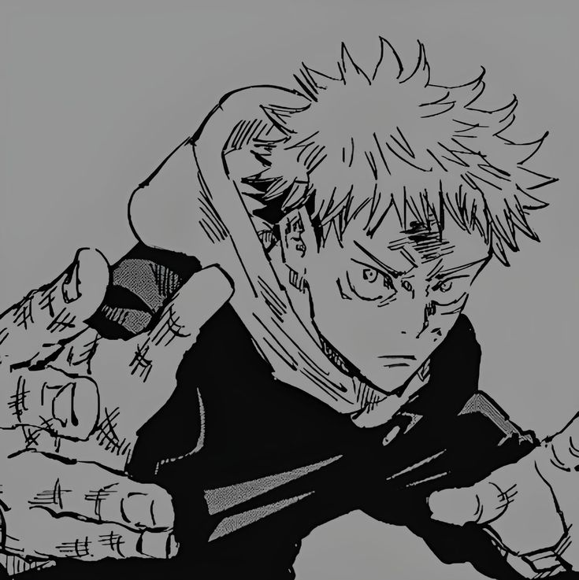

Em vez de sua motivação, eu sou tão viciado em Yuji porque ele é tão moderado em personalidade. Ele não é excessivamente tenso em todos os aspectos. Ele experimentou raiva esmagadora, tristeza e frustração, mas então ele supera isso (ou tenta esconder). Ele raramente ataca e age com calma, mas quando é forçado a explodir, é justificável e compreensível. Ele pode ser atrevido e às vezes agir de forma precipitada também, mas ele pode exalar sentimentos intensos que me fizeram sentir... triste? Não sei...